Hirel 2006

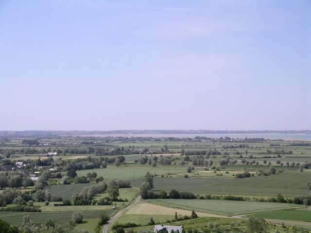
Hirel, c'est là, au fond de la baie. Oui, en arrivant, je suis monté sur le Mont de Dol pour avoir une vue d'ensemble...

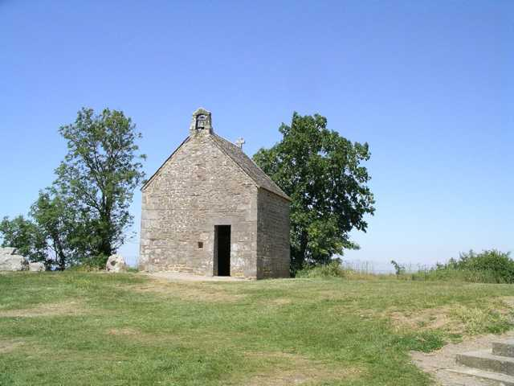
Le Mont de Dol, c'est un énorme rocher au milieu d'une plaine plate comme la main. Pour y monter, il faut passer la première ! En haut une chapelle, ...

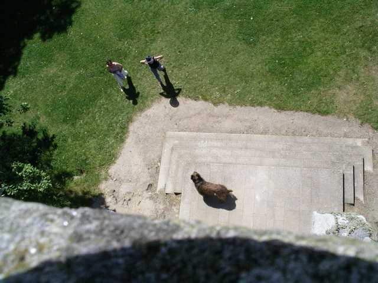
...une tour dans laquelle on peut monter pour jouir encore mieux du panorama (56 marches quand même...)...mais ça permet de faire de l'aérophoto sans cerf-volant !

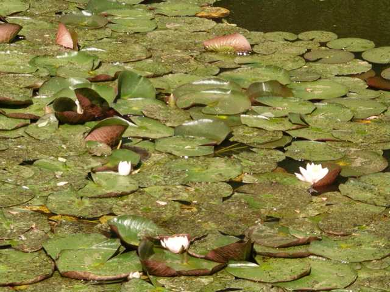
Il y a aussi une mare, la roche doit être bien étanche ! Et des nénuphars en fleurs...

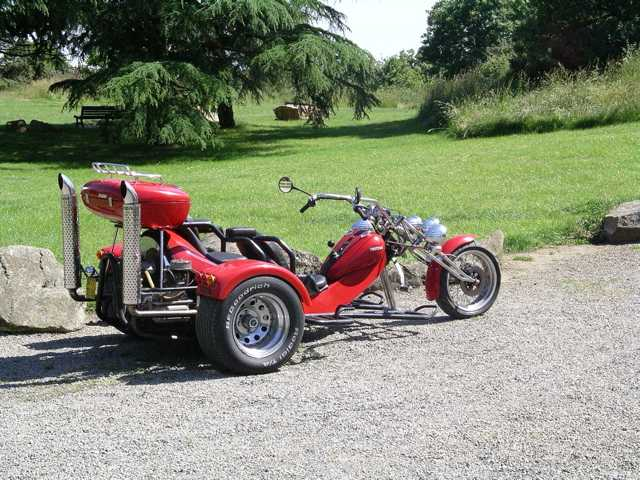
On peut monter là-haut pour le plaisir, et ça peut même valoir un grand voyage...

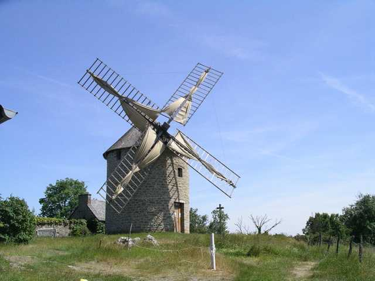
Il y aussi 2 moulins, dont l'un est en état de marche, mais bloqué, faut pas l'user !

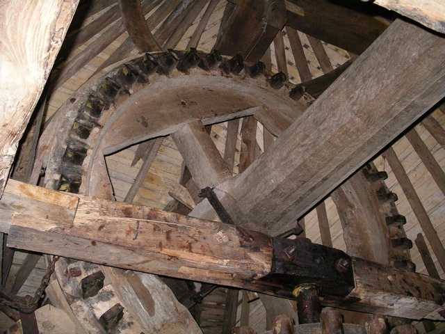
On peut même visiter l'intérieur du moulin. Ici l'axe des ailes avec son immense engrenage à dents en bois...

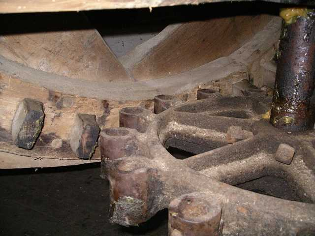
...qui entraîne un arbre vertical, bois sur fer, faut bien graisser... mais on peut changer les dents en bois usées !

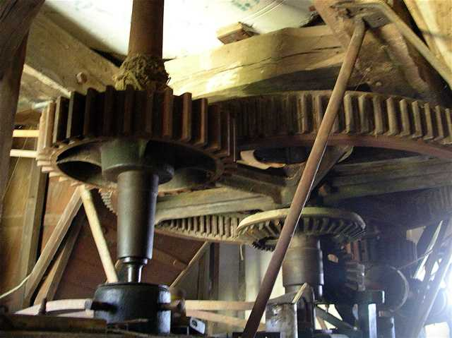
L'arbre vertical transmet le mouvement aux 2 jeux de meules et éventuellement à des servitudes (treuils, tamis,...). On voit le dessous d'une des meules, la partie dormante.

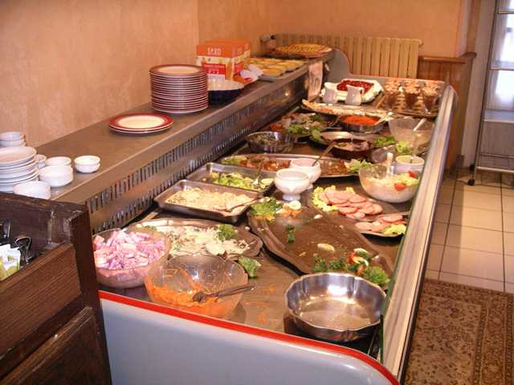
Dès le vendredi soir, repas au restaurant, contrairement à certain festival récent que je ne nommerai pas... Un buffet énorme, et un bon dessert.

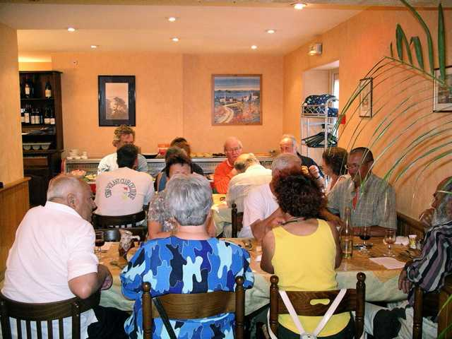
Pleins de membres du CVCF, plus des Pirates, déjà ce soir...

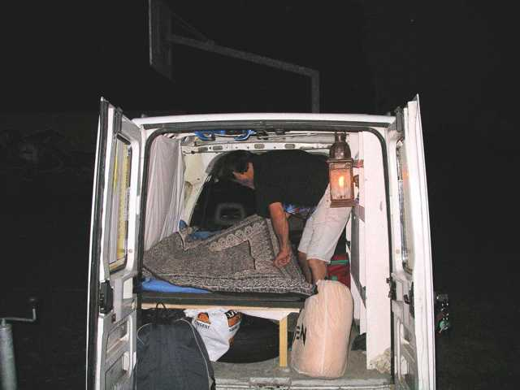
C'est pas tout, on va se coucher, moitié à l'hôtel, moitié en camping-car sur la plage, moitié au terrain de camping, belle pelouse accueillante !

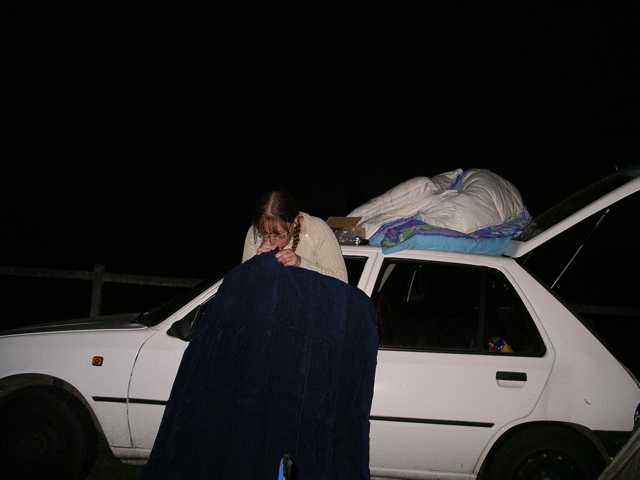
Jean-Michel a apporté le matelas pneumatique, mais pas le raccord pour le gonfler. Heureusement, il n'est pas venu seul !

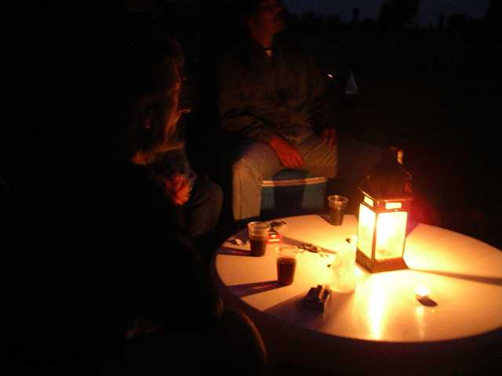
Jean-Michel a aussi amené une table ronde qui donne une ambiance très zen à la soirée Pirates...

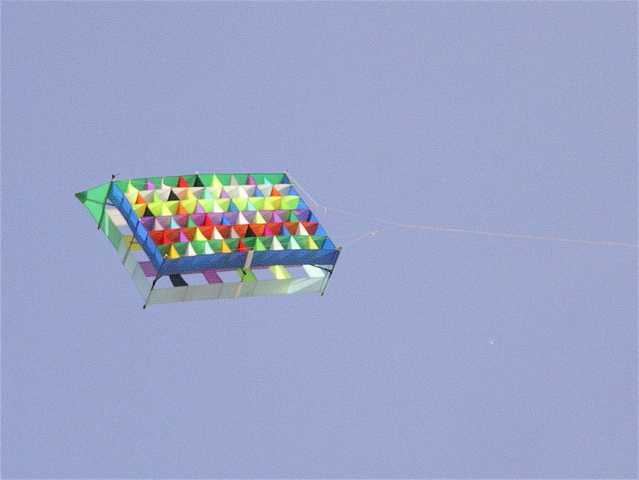
Oui, je vais vous parler un peu des cerfs-volants, attendez, quoi ! Le samedi débute avec ce joli multicellulaire, plus petit qu'on ne croit à voir la photo...

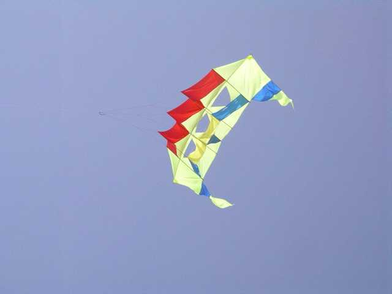
Un beau Wasseges coloré, aussi...

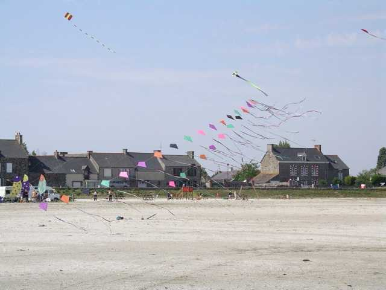
Ca se meuble peu à peu. François a sorti son arche, modeste, mais qui volera toute la journée !

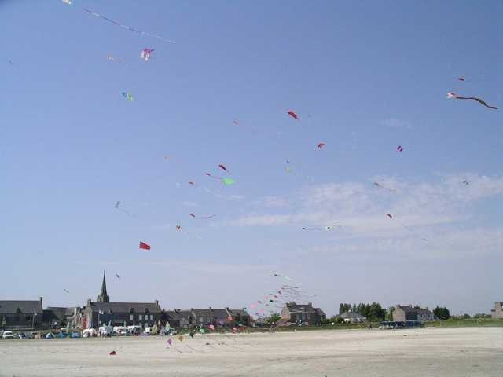
Finalement pas mal de monde, avec toutes les coccinelles préparées pour la circonstance !

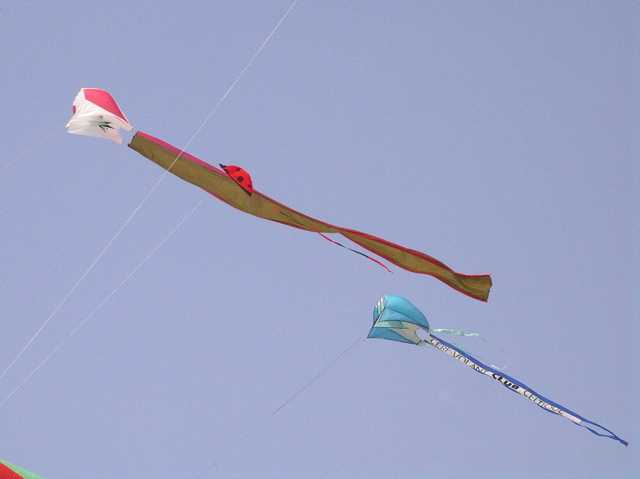
Deux beaux flow-forms, on reconnaît la patte celtique de Claude !

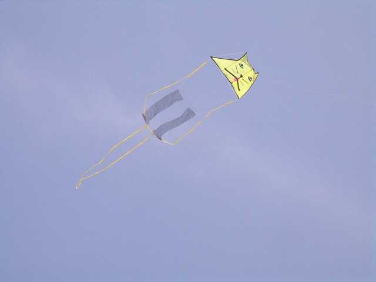
Et là, bien sûr, c'est Emmanuel qui a sorti un de ses chats. Les voiles noirs sont les pattes de devant (je précise, ce n'était pas évident pour tout le monde...).

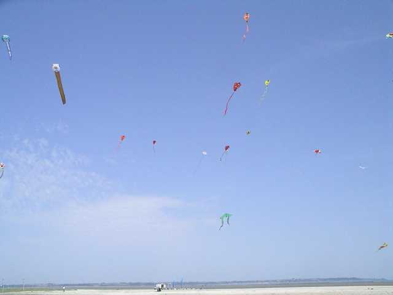
A 11 h, envol de coccinelles, ça en fait pas mal, on en espère encore plus à Dieppe ! Forme, structure et queues imposées, couleurs libres pour les élytres et les points. Mais on en a vu beaucoup de rouges à points noirs !

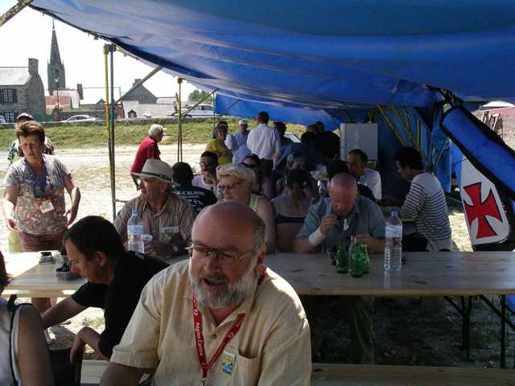
A midi, moules-frites avec participation financière réduite. Les moules, bien, mais les frites, fallait être TRES patient, comme on dit dans la pub sur le fromage !

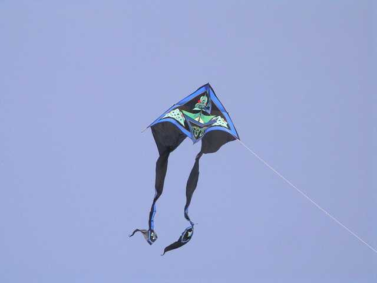
On retrouve aussi les couleurs de Claude dans ce pyrodelta modifié avec poche kangourou centrale...

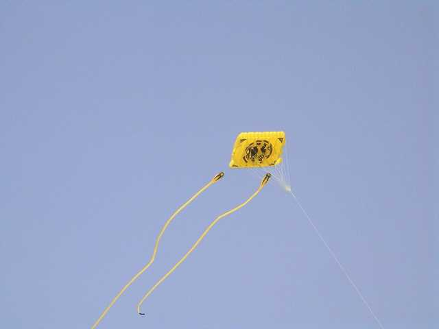
On revoit aussi ce beau gonflable éclatant avec ses queues tubulaires du même cru.

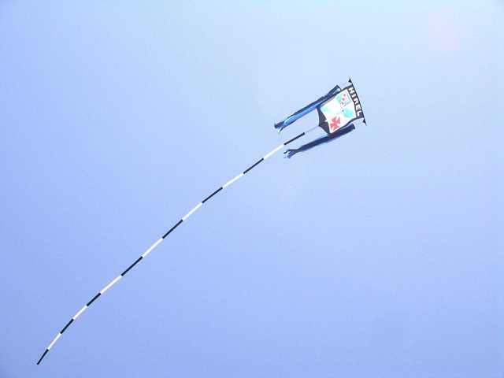
L'année derniere, le cv club celtique avait offert au maire ce CV aux armes d'Hirel, revenu voler cette année. Un peu instable, relire l'article du Lucane sur les brides transversales...

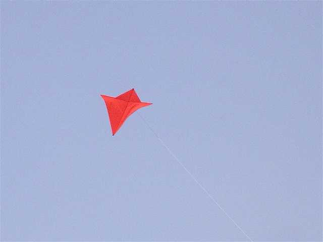
Sylvien a créé un nouveau cerf-volant, version minimaliste des Jessicas, mais il n'a pas encore trouvé de nom : Jess, Jes, J... !

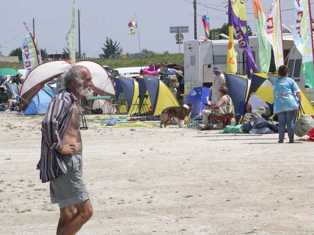
Le village de tentes s'est monté, il fait chaud. Même Gaby, pourtant tanné par le soleil, est en débraillé et non en habit de soirée...

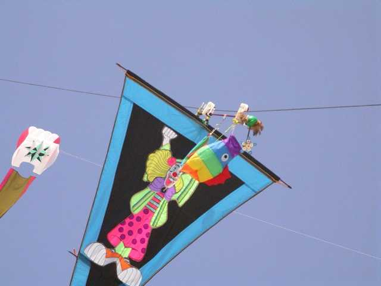
Claude a aussi une navette très décorée et qui fonctionne bien. Mais peu de public pour mériter un lâcher de bonbons...

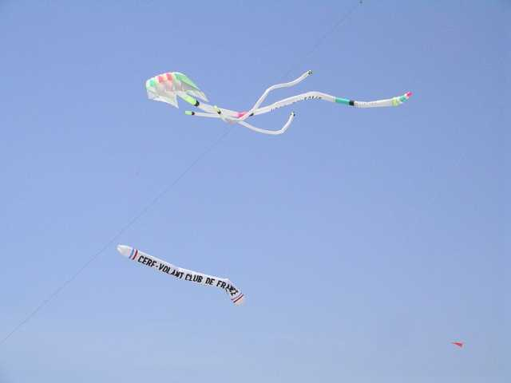
La queue fétiche du CVCF a pris place sous le méga CV de Vierzon, beau symbole de l'osmose entre le national et les clubs locaux...

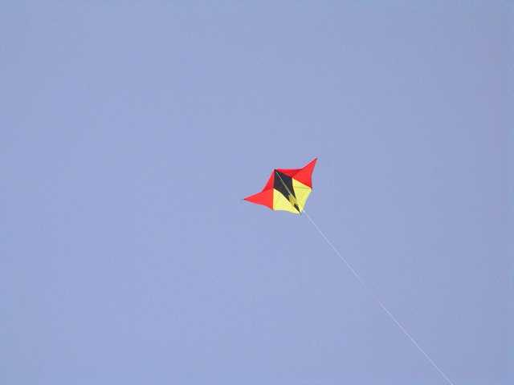
On a vu pas mal de Jessicas. Celle-ci n'a pas l'air en bonne santé, le créateur n'a pas dû respecter complètement les plans de Sylvien...

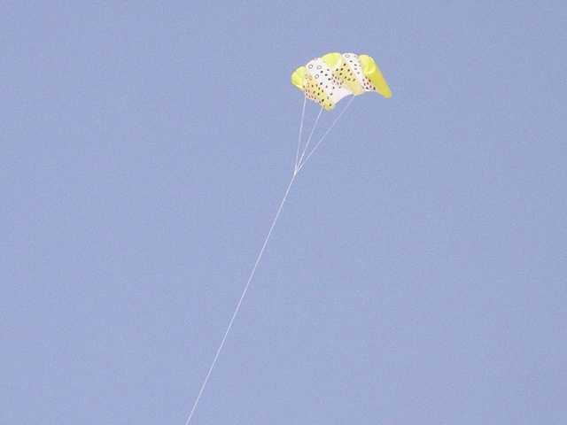
Par contre ce multi-sled à pois vole droit comme un I, et tire d'enfer !

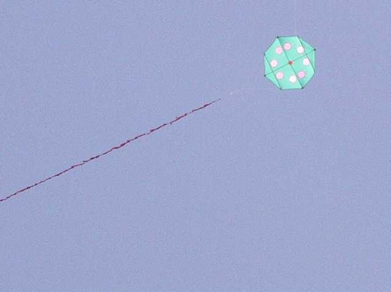
Ce Pétillon aussi... C'est la mode des pois, cette année !

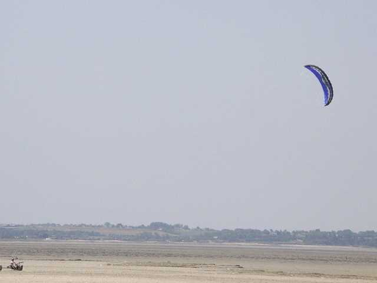
Les chars à voile de location en mettent un coup sur la plage, comme les chars à cerf-volant des Pirates (enfin, pas Yves, dont la clavicule est en suspens)...

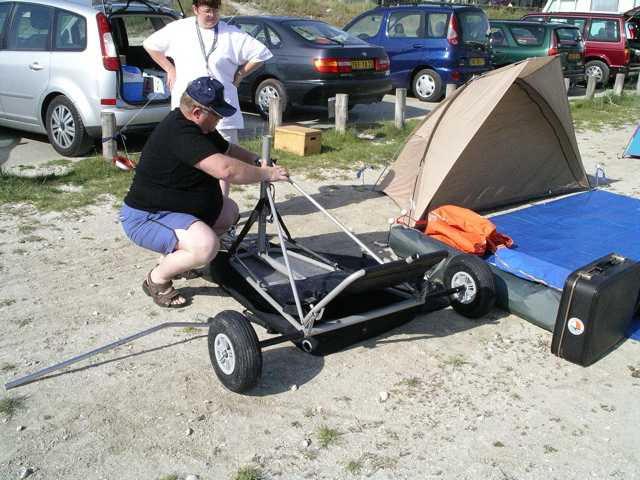
Mais Philippe sort d'une minuscule housse de 1 m 20 son arme secrète : un char à voile pliant. Tout est dans la housse : le châssis, le mât (5 tronçons de carbone emboîtés), la voile, les roues, l'essieu (en carbone), le guidon...

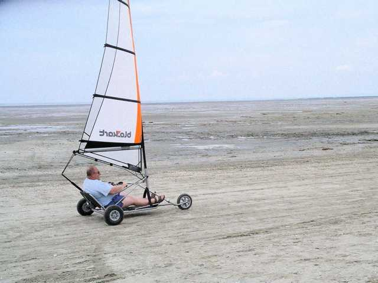
Philippe fait un petit galop d'essai et propose son kart à tous les volontaires. Bon, j'ai fait une fois un coup de char à voile... dans la Beauce, alors je suis expert, je me lance.

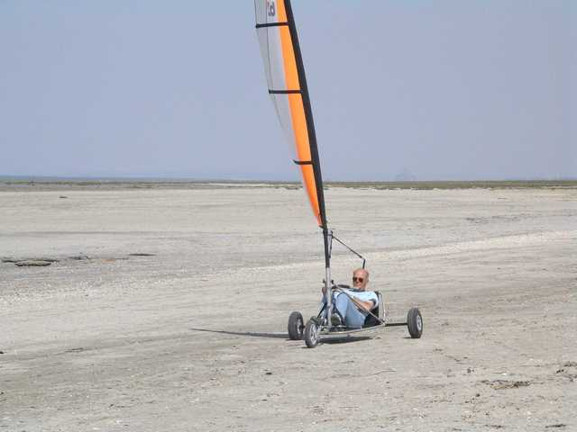
Ben c'est pas trop dur, et on s'amuse ! On va un peu moins vite que les chars à CV, mais pas beaucoup. Il faut seulement un vent assez soutenu, sinon eux roulent et pas le kart.

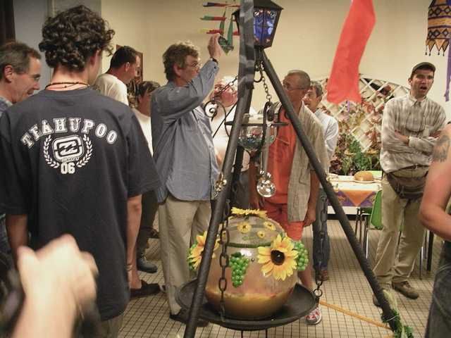
Samedi soir, Salle des Fêtes : le barbecue ressert, avec du jus d'orange... amélioré dans la sphère. Les dames qui finiront les quartiers d'orange du fond à la fin seront très gaies...

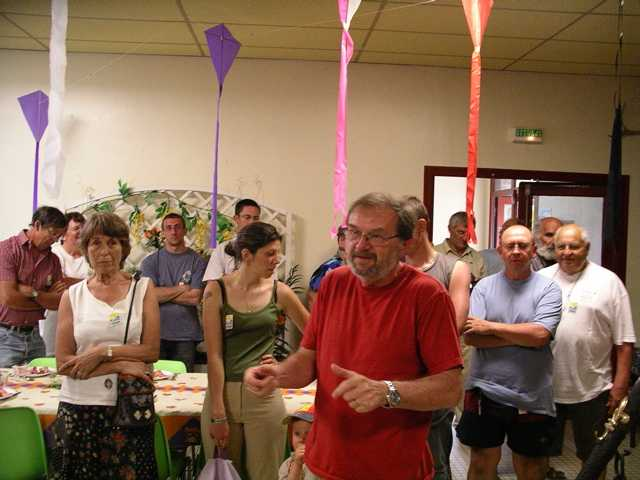
Daniel communique quelques informations CVCF, en particulier sur la participation à Dieppe.

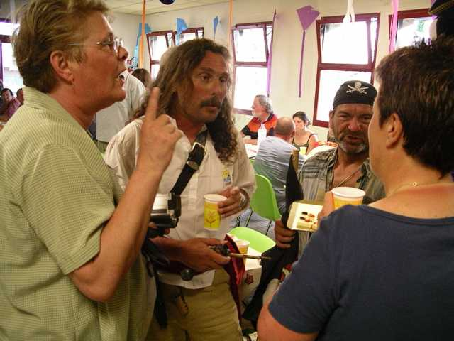
Les Pirates font une entrée remarquée, en tenue de pirates très réalistes ! Yves a quand même la force de tenir sa pipe...

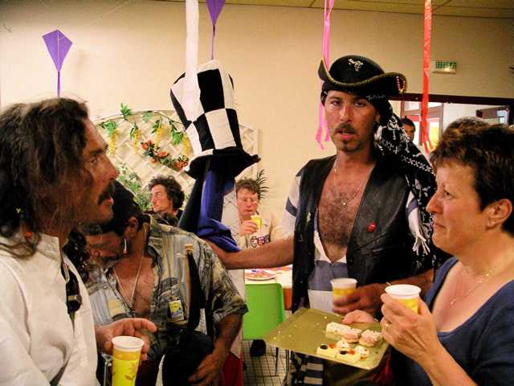
Jean-Michel, c'est lui, avec le tricorne ! C'est un chapeau de pirate, ça ?

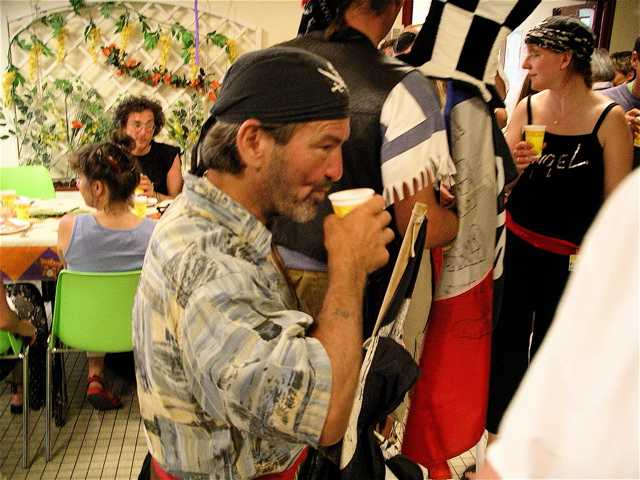
Mi-mi, lui, a le vrai foulard de pirate...

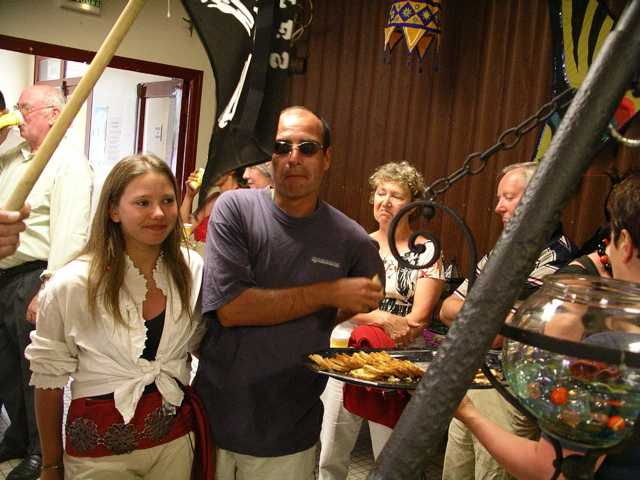
Gaelle est bien sûr de la partie, l'est ben mignonne comme ça. Mais son copain Xavier, lui, n'a pas l'honneur d'être Pirate...

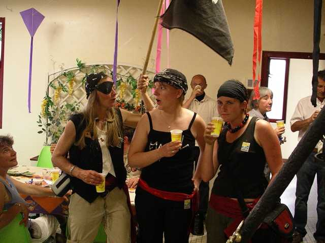
Et toutes ces dames piratesses sont aussi sur leur trente-et-un...

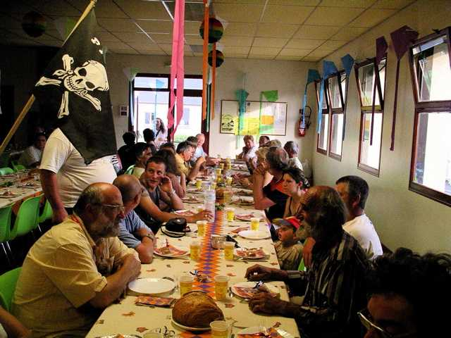
Bon, c'est pas tout, à table maintenant, et du solide. On aura un couscous mitonné pour nous remettre des efforts de la journée...

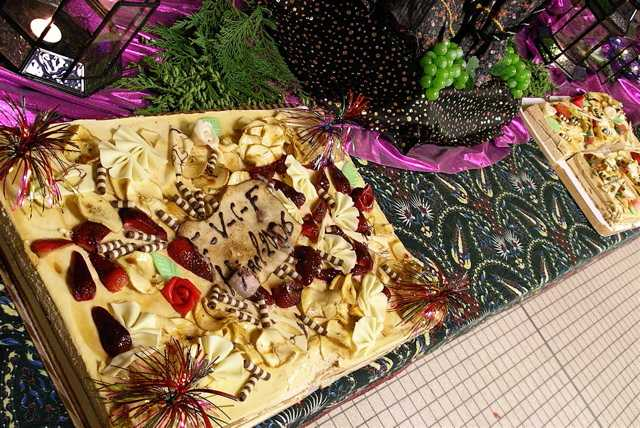
Et au dessert, un gâteau confectionné spécialement pour le CVCF, et succulent en même temps, on s'en lèche les doigts !

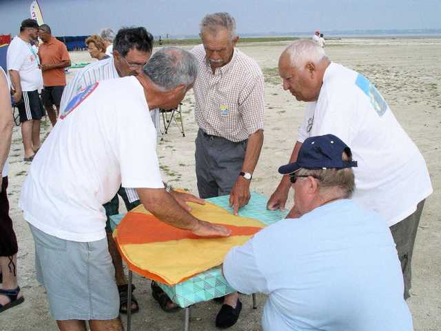
Le lendemain, peu de vent. Joël part dans un cours sur la fabrication des montgolfières en papier !

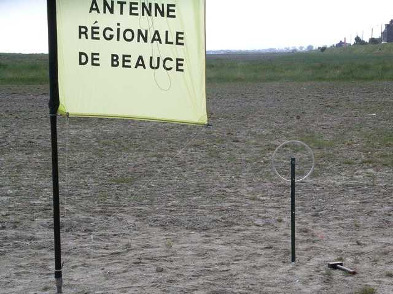
François a amené son nouveau dévidoir. Simple et pratique, mais il ne contient pas beaucoup de fil, faudra rajouter des flasques...

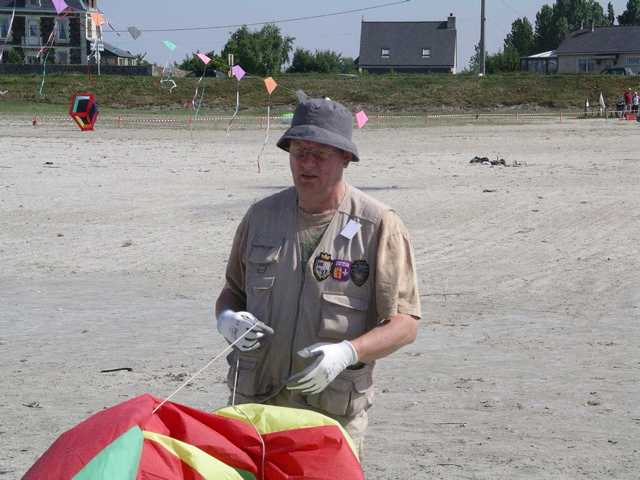
Une grande première : François avec des gants. Faut dire qu'il fallait voir ses mains toutes brûlées après un sauvetage violent !

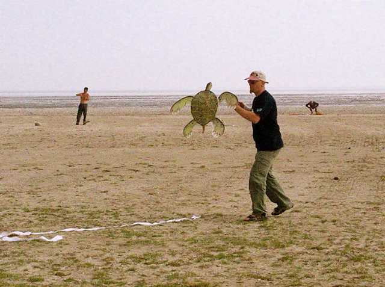
Cette tortue avec ses pattes rigides et sa couleur écaille m'a bien plu. Elle n'a pas beaucoup volé faute de vent, mais n'empêche !

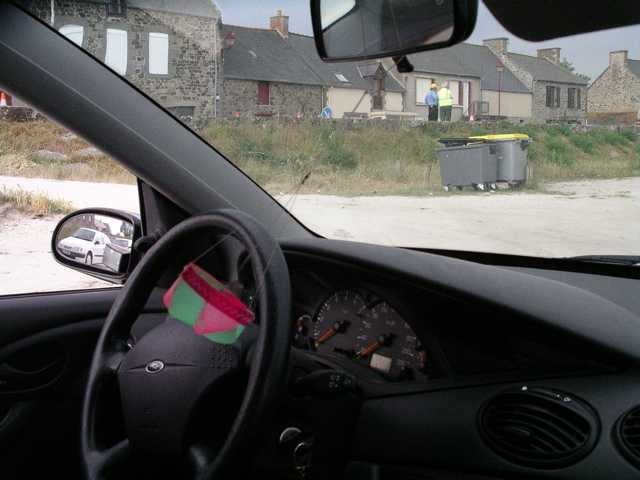
Michel Renouis est venu au cerf-volant indoor, ou plutôt in-car : quand il met la ventil ou qu'il roule, la rosace décolle et se met à tourner...

Encore une Jessica inconnue, avec une belle tête de rouquine !

Et encore : un Dopéro Rominet, et un Pentagon peu visible sur le ciel blanc !

Et le Jessica de Sylvien, bleu (il n'aime pas le bleu, c'était pour faire des essais et le détruire après exprès). Et le delta de Christian : les queues font de la traînée et pas de portance, ça stabilise bien...

...et deux Pentagons, un Joker et un Marsupilami...

Sylvien est en grand briefing sur les particularités, avantages et inconvénients de Jessica. Le public a l'air perplexe, mais c'est de la famille à lui...

Les Pirates n'ont pas attendu l'heure officielle de l'apéro pour se réunir en petit comité. De toute façon, il n'y a pas assez de vent pour rouler, ce matin...

Ce Rokkaku ne représente pas les mouettes du Logo de Charente-Maritime, mais une mouette et son ombre sur la vague...

A midi et demie, petit pot sur la plage au bout du barnum, mais au soleil...

Claude est au barbecue, bien organisé : un étage pour les saucisses crues, un pour griller, et la marmite pour conserver au chaud celles qui sont cuites. Cette année, décoration indienne.

En attendant, François poursuit son initiation aux sonorités de la tige filetée. Il a même le morceau de bois spécial pour produire le bon son...

Plat de résistance : hot-dog-celte : une saucisse roulée dans une crêpe (ou une galette selon la région bretonne), en tout cas au sarrasin....

Le vent remonte doucement, et les saucisses sont finies. Eric sort son delta à carreaux obliques...

Un roller redescendra quand le vent forcira...

Une espèce de Rokkaku de largeur variable et à pompons...

François a réalisé une Jessica à son idée, avec du milar grillagé hyper-solide, sans quille, sans tendeurs avant, avec un raccord central multi-trous et une bride monopoint... Il vole bien, mais rencontrera peut-être des cas de vol difficiles, et il a déjà cassé un tube de carbone 10 !

Vol aussi de ce cerf-volant gonflable. Contrairement à ce que l'on peut penser, c'est un pilotable 2 lignes. On arrive à faire des ronds avec, mais c'est limite !

Les auteurs ont aussi des Révos. L'avantage du 4 lignes, c'est qu'on n'a pas besoin de courir comme pour le 2 lignes... et ils ont trouvé une méthode relax pour passer l'après-midi aux commandes.

On verra aussi ce joli Circoflex à carreaux, à côté de la "cathédrale" de Loïk...

Loïk sort aussi son Eddy... à étagères, son tic préféré ! Il l'avait réalisé pour la fête du CVCF à Saint-Malo, plan du Eddy imposé, mais interprétation un peu spéciale !

Un cerf-volant pas gentil tire la langue aux arrivants et aux passants sur la digue...

Beaucoup de voitures et de camping-cars sur le parking réservé aux cervolistes alors que le Sous-Préfet a interdit de stationner sur le Domaine Maritime, menaçant même de faire intervenir la Gendarmerie... Mais ledit parking est construit dessus, et signalé par un panneau réglementaire. Allez comprendre !

Trêve de politique ! Ce cerf-volant prismatique a un joli dessus en milar irisé et une longue queue qui le stabilise alors que d'habitude ces CVs virevoltent sans cesse...

Moi, j'ai fait voler mon Condor jusqu'au soir, car hier je n'ai pas été brillant avec mon Albatros2 que j'ai cassé bêtement et que je me suis entêté à vouloir réparer, sans succès d'ailleurs !

On a même vu une roue ou pseudo-roue, assemblage d'hexagones...

...un cellulaire dont je n'ai pas bien compris la structure...

...et le Revolver de Joël à 5 rotors imbriqués qui tournent l'un dans l'autre ...

...un double delta Conyne traîne une queue tubulaire spiralée...

Et beaucoup de vrais CVs de taille limitée, pas comme les grands festivals où sont portés en l'air d'énormes sacs, outres gonflées de vent...

Au soir, réunion au terrain de camping pour terminer les restes... Les Pirates sont encore là, mais sont partis faire une virée à Saint-Malo. Alors des restes, il y en a largement assez pour boire et manger tous ensemble. Merci aux dames (et aux quelques messieurs) qui ont mis tout ça en forme !

François a animé la soirée de plein d'histoires pas racontables mais irrésistibles... Il avait le soleil dans l'oeil et a découpé une assiette pour la transformer en casquette ! Quand je vous dis que c'est un fin bricoleur !
Alors ? Une rencontre toute dans la convivialité comme on les aimerait plus souvent, avec en plus du beau temps, du vent, la plage, et je me suis même baigné, pourtant il a fallu marcher longtemps ! Merci les Celtes !